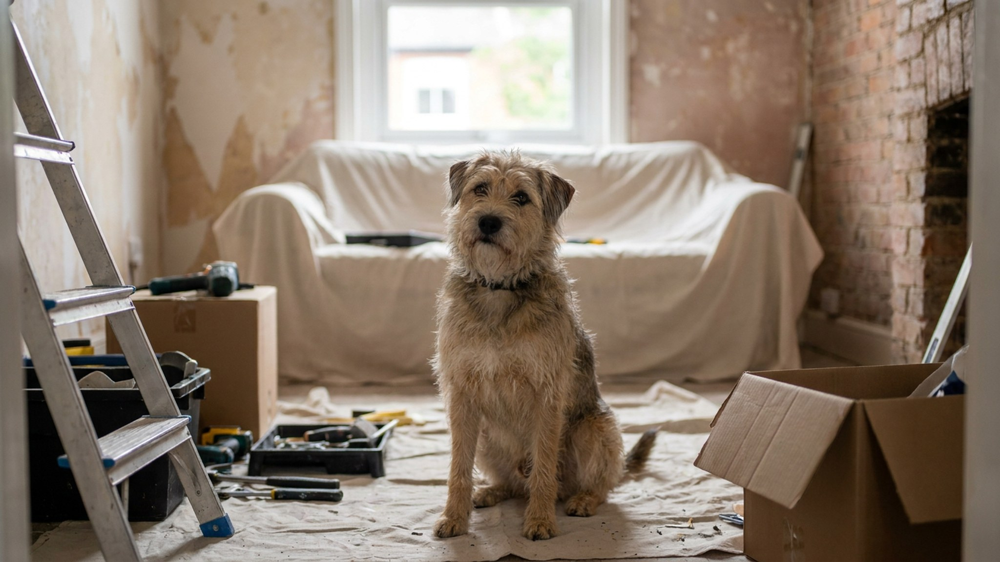

Ремонт с питомцем в квартире: что делать с кошкой или собакой

13 июня 2026 · 8 минут чтения · Жизнь с питомцем
Ремонт начался в понедельник — и в тот же день кошка спряталась под ванной и не выходила двое суток. Перфоратор, чужие люди в квартире, запах грунтовки и нарушенный распорядок — для питомца это серьёзный стресс, даже если внешне кажется, что «всё нормально». Разбираем, как подготовиться, что делать во время работ и как понять, что животному нужна помощь.
🐾 Экономьте на лишних визитах к врачу
Сначала спросите AI-ветеринара в AnimaLife — часто этого достаточно, чтобы понять, нужен ли визит к врачу.
Спросить бесплатно → Спросить в MAX →
Почему ремонт — стресс для питомца
Кошки и собаки воспринимают мир иначе, чем люди. То, что для нас — несколько недель шума и беспорядка, для питомца — полная потеря предсказуемого окружения.
- Звук: перфоратор, болгарка, постукивание достигают 90–110 дБ. Для животных с более чувствительным слухом это значительно интенсивнее, чем для нас.
- Запах: краска, грунтовка, клей, растворители — резкий химический запах при остром обонянии кошек и собак ощущается как удар.
- Чужие люди: рабочие в квартире — незнакомцы на территории. Для кошек это нарушение базового чувства безопасности. Для некоторых собак — постоянная необходимость реагировать на угрозу.
- Нарушение привычного пространства: любимая лежанка убрана, кухня недоступна, маршруты перекрыты — питомец теряет ориентиры.
Шаг 1: подготовьтесь до начала работ
Большинство проблем с питомцем во время ремонта возникают из-за отсутствия подготовки. Несколько действий заранее сильно облегчают ситуацию.
- Определите «безопасную зону»: одна комната, куда рабочие не заходят, — это территория питомца на весь период ремонта. Идеально — дальняя комната с закрывающейся дверью.
- Перенесите в безопасную зону заранее лежанку, миски, лоток (для кошки), любимые игрушки. Пусть питомец освоится в новой конфигурации до начала шума.
- Предупредите рабочих: сообщите, что в квартире животное. Договоритесь, чтобы дверь в комнату питомца оставалась закрытой. Кошки выбегают в открытую дверь мгновенно.
- Проверьте чипирование и ошейник: если кошка или собака сбежит через открытую дверь или окно — актуальный чип и адресник на ошейнике значительно увеличивают шансы найти питомца.
Шаг 2: что делать во время активных работ
Самые стрессовые дни — дробление, сверление, шлифовка. В эти периоды питомцу нужна максимальная защита.
- По возможности вывезите питомца на период самых шумных работ — к родственникам, в гостиницу для животных, к знакомым.
- Если вывезти невозможно — закройте животное в безопасной зоне с включённым фоновым звуком (спокойная музыка или белый шум). Это частично маскирует резкие звуки.
- Кормите по расписанию — стресс притупляет аппетит, но соблюдение режима кормления создаёт хотя бы один предсказуемый элемент в хаосе.
- Уделяйте питомцу время вечером — после ухода рабочих проведите 20–30 минут спокойного общения.
- Запахи: проветривайте квартиру после работ с краской и грунтовкой. Не оставляйте открытые ёмкости с химией в зонах доступа питомца.
Строительные материалы и безопасность питомца
Ремонт — источник реальных рисков для животных, которые любят исследовать всё вокруг.
- Провода и инструменты: не оставляйте электроинструмент, провода-удлинители и острые предметы в зоне доступа питомца — особенно щенков и котят.
- Строительная пыль: цементная, гипсовая, древесная пыль раздражает дыхательные пути. Не допускайте питомца в запылённые зоны до уборки.
- Краска и клей: некоторые виды токсичны при контакте с кожей и при вдыхании паров в закрытом помещении. Держите питомца подальше от свежепокрашенных поверхностей и проветривайте.
- Монтажная пена: схватывается быстро и к шерсти прилипает намертво. Не срезайте самостоятельно — обратитесь к ветеринару.
- При любом подозрении на контакт питомца с химическими веществами — к ветеринару без промедления.
Как понять, что питомец переживает стресс от ремонта
Стресс от ремонта у животных может проявляться по-разному. Важно отличать временную реакцию от состояния, которое требует внимания.
- Нормальные реакции: прячется, меньше ест 1–2 дня, меньше общается. Проходит само после снижения шума.
- Сигналы, требующие внимания: отказ от еды более 2–3 дней, агрессия, которой раньше не было, расчёсывание кожи до ран, навязчивые стереотипии.
- Для кошек дополнительный сигнал: начала ходить мимо лотка — это часто реакция на стресс, а не дерзость.
- Для собак: разрушительное поведение, нарастающая тревога при уходе хозяина — может усиливаться во время ремонта из-за общего напряжения.
Ремонт закончился: период привыкания к новому пространству
Когда всё готово, питомцу нужно время, чтобы переосмыслить пространство. Это особенно важно для кошек.
- Не переносите питомца в «новую» квартиру резко — откройте комнаты постепенно, по одной в день.
- Запах в новой комнате незнакомый — оставьте лежанку или старое полотенце с привычным запахом питомца в каждой комнате.
- Кошки, которые активно трутся о стены и мебель после ремонта, — это нормально. Они «метят» территорию феромонами, восстанавливая ощущение «своего дома».
- Дайте 1–2 недели на адаптацию. Если поведение питомца не нормализуется через 3–4 недели после ремонта — обратитесь к ветеринарному поведенцу.
Когда лучше вывезти питомца
Если ремонт масштабный или займёт больше двух недель — всерьёз рассмотрите вариант временного переезда питомца.
- Гостиницы для животных: выбирайте с индивидуальными боксами, не с общим пространством. Для кошек — отдельные кошачьи секции.
- Знакомые или родственники: лучший вариант, если питомец их знает. Чужие люди — дополнительный стресс.
- Оставьте вещи с запахом хозяина — лежанку, футболку. Это снижает тревогу при временном переезде.
🐾 Всё о вашем питомце — в одном приложении
AI-ветеринар, дневник, напоминания о прививках и уходе. Установите AnimaLife — это бесплатно, в Telegram и MAX.
Открыть в Telegram → Открыть в MAX →
🐾 Понравился разбор?
Подпишитесь на канал — каждый день разбираем по одному тревожному симптому у кошек и собак: что в пределах нормы, а когда пора к врачу. Подпишитесь, чтобы не пропустить разбор, который может спасти здоровье вашего питомца.
Материал носит информационный характер и не заменяет очную консультацию ветеринара.
← Все статьи · Открыть AnimaLife в Telegram · RSS